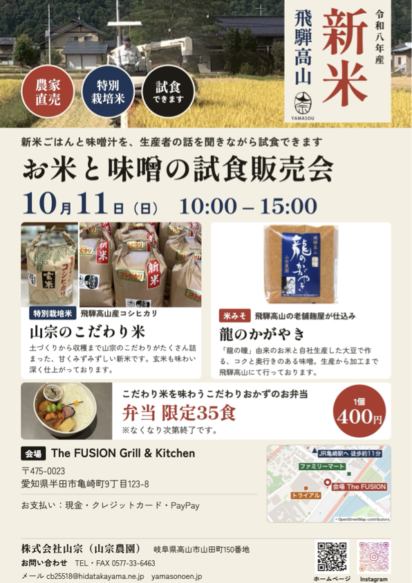
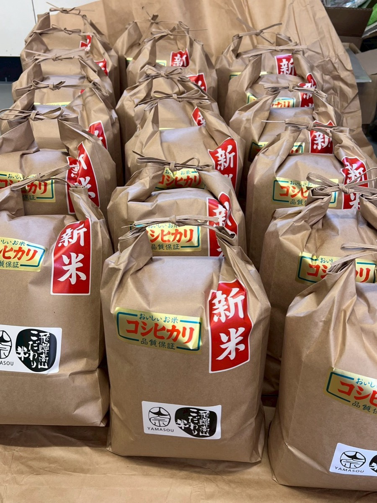

「お米と味噌の試食販売会」を開催します。新米ごはんと味噌汁を、生産者の話を聞きながら試食いただけます。
日時：10月11日（日）10:00〜15:00
会場：The FUSION Grill & Kitchen（愛知県半田市亀崎町9丁目123-8）
山宗のこだわり米（特別栽培米）、米みそ「龍のかがやき」を試食・販売。こだわり米弁当（限定35食・1個400円）も販売いたします。
今年も自信を持っておすすめできる、おいしいお米ができあがりました。
口に残る甘さとしっかりとした粘り気が特徴の、特別栽培コシヒカリです。
オンラインストアと、飛騨高山の直売所「飛騨国府 特選館あじか」にて販売しております。
詳しい栽培のこだわりや商品のご購入は、以下よりご覧ください。
株式会社山宗は、より高品質な生産物をより手軽に食べていただけることを願っております。
そのために長年蓄積した経験と技術により、味と栄養価の向上を目指しております。
加えて、生産量やコストの面でも工夫をするなどの努力をしております。
何よりも、年々品質を向上させる努力を怠らず生産してきた自負があります。
ぜひ、株式会社山宗の生産品をお食べください。
私たちは、分かっているだけでも300年以上、高山の地で農業を営んでおります。
初めの頃は、米を中心とした地元の野菜を育てておりました。
昭和50年頃より高山でトマトの生産が始まり、私たちもその代からトマトを生産するようになりました。
しかし、初めの頃は生産技術や品種の問題から生産量が振るいませんでした。
加えて、近年に至るまで米・野菜のコストと価格の問題から、農業を続けることが苦しい状況が続いておりました。
そんな中でも多くの農家は、日本の食を支え、より高品質な食材を日本中に届けようと努力してまいりました。
私たちもその一員として生産に励んでおりました。そして現在もその気持ちは変わっておりません。
また、持続的な社会のために環境に配慮した農業も忘れずに行っております。
このような想いを胸に私たちは、2025年から株式会社山宗として再スタートしました。
そして現在では、大豆の生産や味噌、トマトジュースのような加工品にも挑戦しております。
これからも皆様の期待に応える「価値ある一品」をお届けできるよう、努力を続けてまいります。
ご意見やご要望、その他御連絡がございましたら、以下の連絡先まで連絡よろしくお願いいたします。
住所
岐阜県高山市山田町150番地
電話
0577-33-6463メール
cb25518@hidatakayama.ne.jpFAX
0577-33-6463
公式Instagram
最新の農園の様子や商品の情報を発信しています。
Instagramを見る